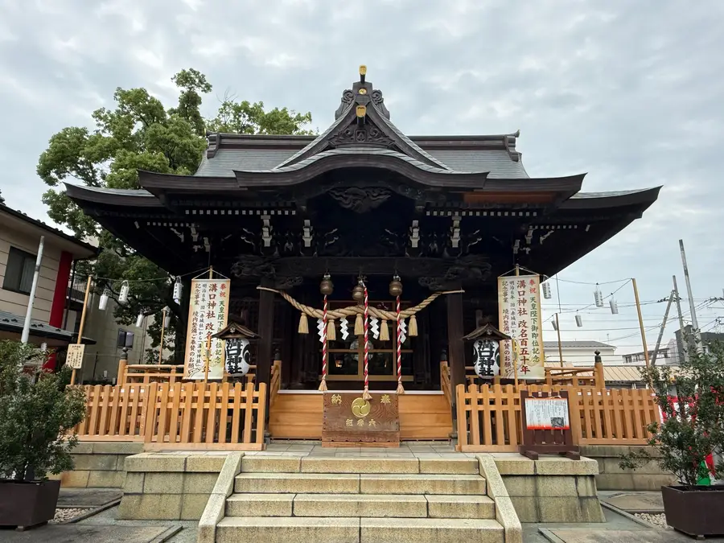
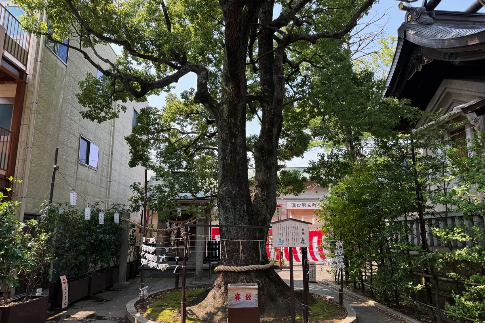
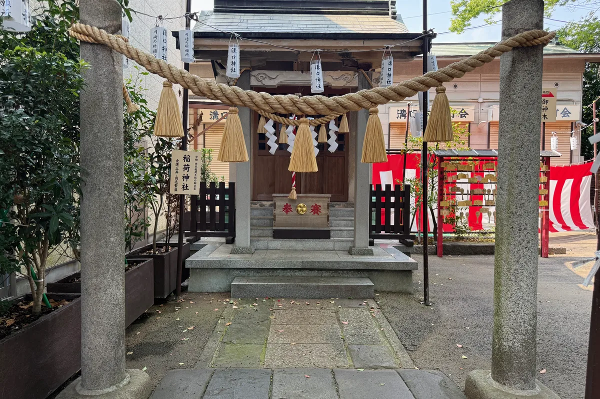
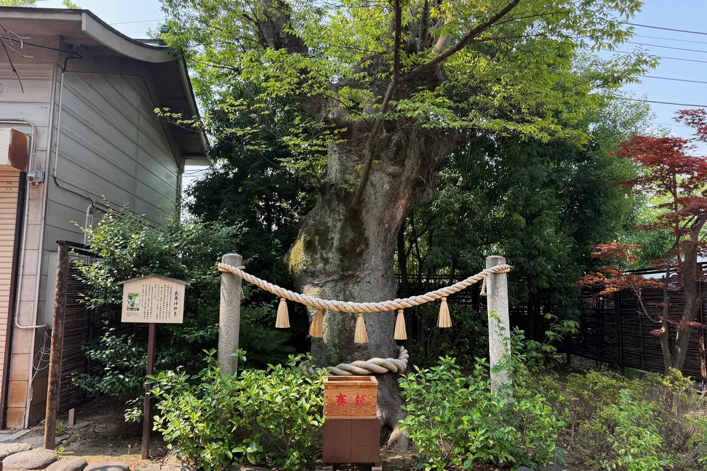

境内のご案内地図と順路で、境内を歩くように。
境内を歩く
境内の主な見どころを、実際の参拝順に沿ってご案内します。番号は境内案内図の順路番号です。
-
一
 入口大山街道側の入口です。ここから溝口神社の参拝が始まります。ここから参拝を始める →
入口大山街道側の入口です。ここから溝口神社の参拝が始まります。ここから参拝を始める →
-
二
 大鳥居一礼して鳥居をくぐり、参道へ進みます。鳥居をくぐり、参道へ →
大鳥居一礼して鳥居をくぐり、参道へ進みます。鳥居をくぐり、参道へ →
鳥居をくぐり、参道の奥へ。
-
七
 百度石・神橋神橋を渡って本殿の方へ。神橋と百度石を見る →
百度石・神橋神橋を渡って本殿の方へ。神橋と百度石を見る →
お参りの前に、手と口を清めます。
-
九
 手水舎・絵馬掛け手と口を清めてからお参りします。お参り前の作法を見る →
手水舎・絵馬掛け手と口を清めてからお参りします。お参り前の作法を見る →
-
十

本殿御祭神・天照皇大神をお祀りしています。御祭神について知る → -
十二
 拝殿厄除・安産祈願など各種御祈祷はこちらで。拝殿と御祈祷について知る →
拝殿厄除・安産祈願など各種御祈祷はこちらで。拝殿と御祈祷について知る →
お参りのあとは、境内の御神木へ。
-
十七

親楠御神木境内で大切に守られている楠の古木。親楠の由来を見る → -
十八

稲荷社鳥居の先に鎮座する境内社。稲荷社の案内を見る → -
二十一

長寿ケヤキ御神木注連縄が結ばれた御神木。長寿ケヤキについて知る → -
二十七
 願掛け夫婦銀杏御神木寄り添って立つ二本の銀杏。夫婦銀杏の案内を見る →
願掛け夫婦銀杏御神木寄り添って立つ二本の銀杏。夫婦銀杏の案内を見る →
このほかの見どころ(全二十七地点)は、境内を歩ける地図でご覧いただけます。